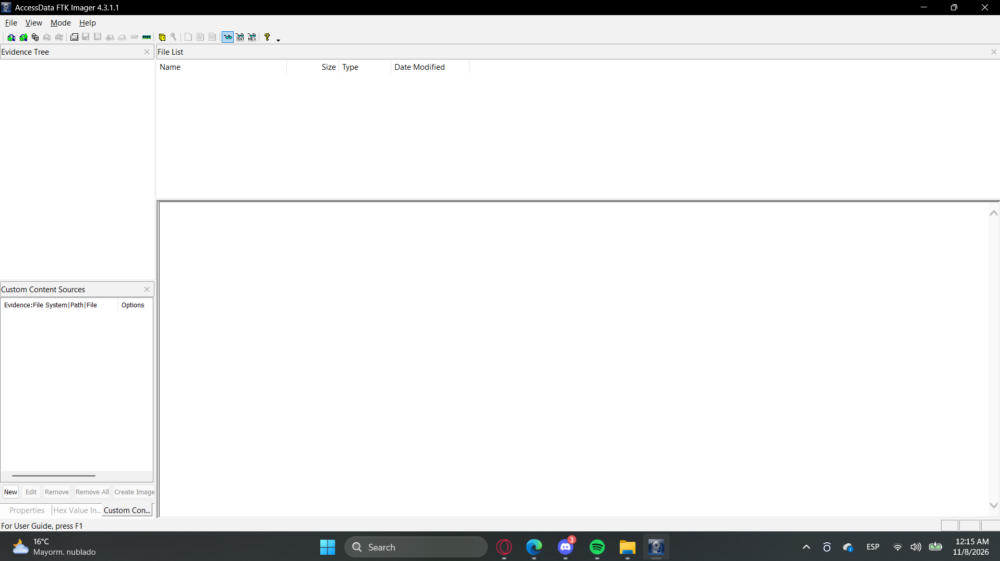
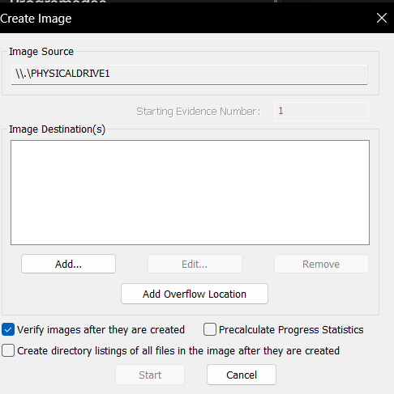
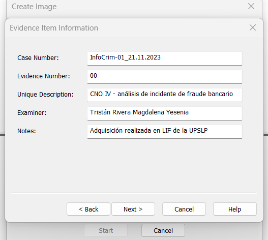
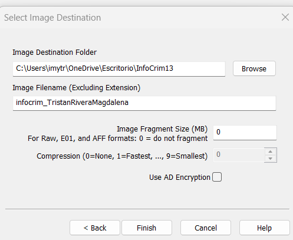
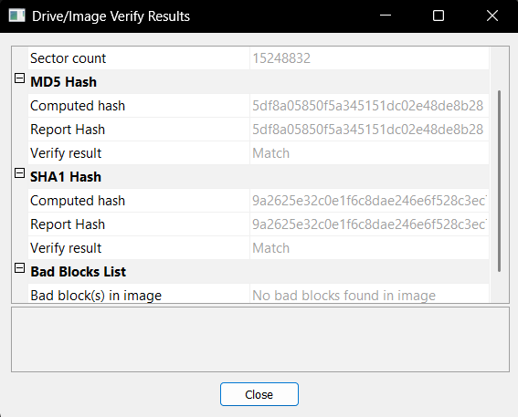
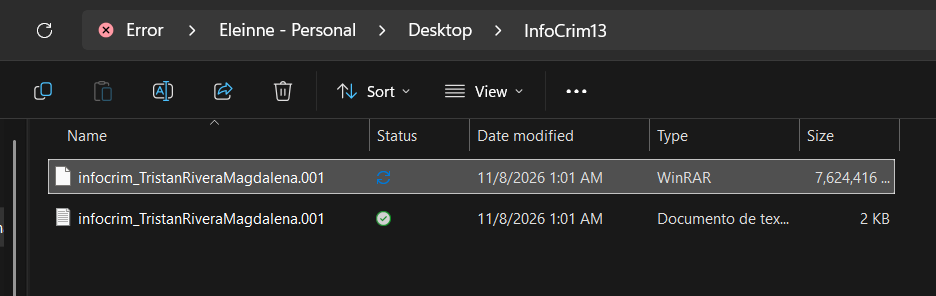
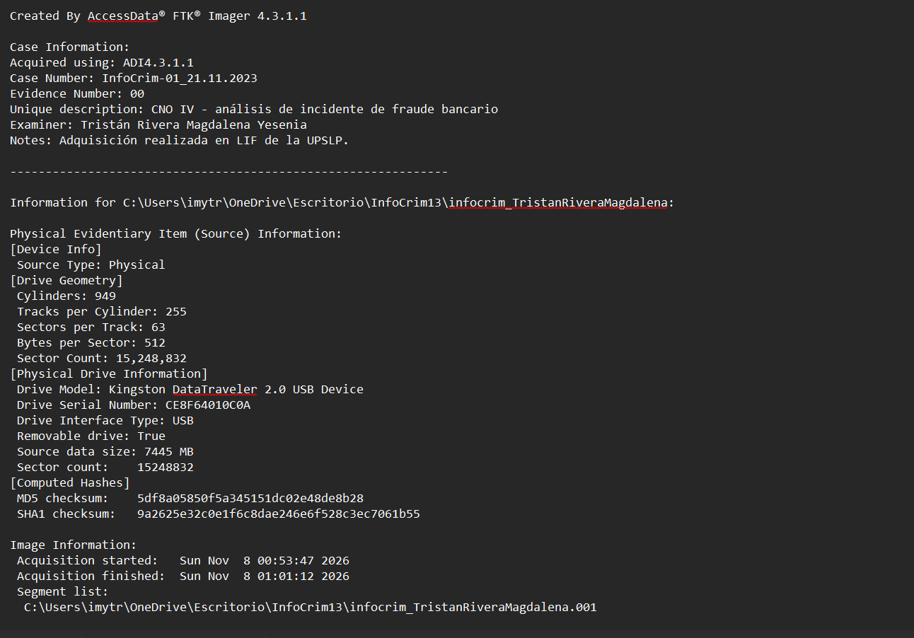

Actividad 16 — La verdad en los bits: adquisición forense con FTK Imager
CNO IV — Programación WAP
Alumna: Tristán Rivera Magdalena Yesenia — 174702 | Grupo: T37A
Docente: Mtro. Servando López Contreras | Parcial: 3
Fecha: 8 de noviembre de 2026
01 — Objetivo
El análisis forense digital exige trabajar siempre sobre copias exactas bit a bit de la evidencia, nunca sobre el original, para preservar su integridad y su validez legal. En esta actividad, como parte del Laboratorio de Informática Forense (LIF), se realizó la adquisición de una memoria USB mediante una imagen forense cruda con FTK Imager, garantizando mediante funciones hash (MD5 y SHA-1) que la copia es idéntica al dispositivo original.
02 — Herramienta: FTK Imager
03 — Proceso de adquisición
Se instaló FTK Imager y se ejecutó File → Create Disk Image → Physical Drive, seleccionando la memoria USB (\\.\PHYSICALDRIVE1) como origen. Se configuró la información de la evidencia, el formato Raw (dd) y la carpeta de destino, y se inició la adquisición con verificación activada.




04 — Resultados de la adquisición
| DATO | VALOR |
|---|---|
| Dispositivo origen | Kingston DataTraveler 2.0 USB — S/N CE8F64010C0A |
| Sectores copiados | 15,248,832 (512 bytes c/u · 7445 MB) |
| Hora de inicio | 8 nov 2026 — 00:53:47 |
| Hora de término | 8 nov 2026 — 01:01:12 |
| Tiempo transcurrido | 7 min 25 s |
| Hash MD5 | 5df8a05850f5a345151dc02e48de8b28 — Match |
| Hash SHA-1 | 9a2625e32c0e1f6c8dae246e6f528c3ec7061b55 — Match |
| Archivos generados | 2 (imagen .001 + reporte .001.txt) |



05 — Preguntas teóricas
| PREGUNTA | RESPUESTA |
|---|---|
| ¿Qué es el formato Raw (dd)? | Copia cruda bit a bit, sector por sector, sin compresión ni metadatos incrustados. De lectura universal; los hashes se guardan aparte en el .txt. |
| ¿Qué es el formato E01? | EnCase Evidence File, formato propietario de EnCase. Guarda la imagen con metadatos del caso, compresión opcional y verificación de integridad integrada. |
| Diferencia SMART vs E01 | Ambos son Expert Witness Format (metadatos + compresión + verificación). El E01 es de EnCase, estándar de la industria y más compatible; el SMART es nativo de ASR Data, más usado en Linux y menos difundido. |
06 — Conclusión
// REFLEXIÓN TÉCNICA
La adquisición demostró el principio esencial de la informática forense: preservar la evidencia sin alterarla. Se obtuvo una copia exacta de 15,248,832 sectores de la memoria USB y, al coincidir los hashes MD5 y SHA-1 entre la imagen y el dispositivo (resultado «Match», sin bloques defectuosos), queda probada la integridad de la copia.
El reporte .txt generado por FTK Imager funciona como cadena de custodia: documenta caso, examinador, tiempos y hashes, dando soporte legal al análisis posterior. Trabajar sobre esta imagen —y nunca sobre el original— es lo que garantiza la verificabilidad y reproducibilidad de la investigación.